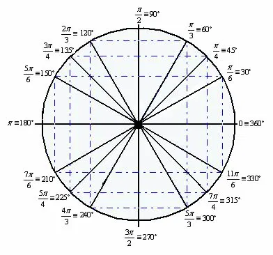

Arcos, Ângulos e Ciclo Trigonométrico
Neste conteúdo foi estudado ângulos, arcos e a forma como eles se relacionam dentro da circunferência trigonométrica. O principal objetivo foi entender como representar medidas angulares e como localizar esses valores no ciclo trigonométrico.
Ângulo
O ângulo é formado pela abertura entre dois semirretas que partem de um mesmo ponto. Ele pode ser medido em graus ou em radianos. A medida mais usada em trigonometria é o radiano, que facilita cálculos e relações com circunferências.
Medida em Radianos
O radiano é definido como o comprimento do arco dividido pelo raio da circunferência. Como o comprimento total da circunferência é 2πr, concluímos que dar uma volta completa corresponde a 2π radianos.
Assim, temos:
- 180° = π rad
- 360° = 2π rad
- 90° = π/2 rad
- 45° = π/4 rad
Ciclo Trigonométrico
O ciclo trigonométrico é uma circunferência de raio 1 usada para representar ângulos. O ponto inicial é (1,0) e os ângulos são medidos no sentido anti-horário. Cada ponto do ciclo representa um par ordenado (cos(x), sen(x)).
 Fonte: Toda MatériaArcos Notáveis
Há também os principais arcos notáveis:
- π/6 → (√3/2 , 1/2)
- π/4 → (√2/2 , √2/2)
- π/3 → (1/2 , √3/2)
- π/2 → (0 , 1)
Quadrantes
O ciclo trigonométrico é dividido em quatro quadrantes, e cada um deles possui sinais específicos para seno e cosseno:
- 1º quadrante: sen > 0, cos > 0
- 2º quadrante: sen > 0, cos < 0
- 3º quadrante: sen < 0, cos < 0
- 4º quadrante: sen < 0, cos > 0
Arco Orientado
Chamamos de arco orientado o movimento ao longo da circunferência a partir do ponto inicial. Valores positivos correspondem ao sentido anti-horário, enquanto valores negativos são no sentido horário.
Arcos Congruentes
Dois arcos são congruentes quando são separados por múltiplos de 2π, ou seja: representam o mesmo ponto no ciclo trigonométrico. Por isso, ângulos como 30°, 390° e -330° são equivalentes.